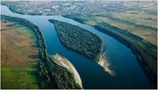
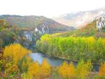
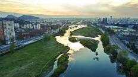
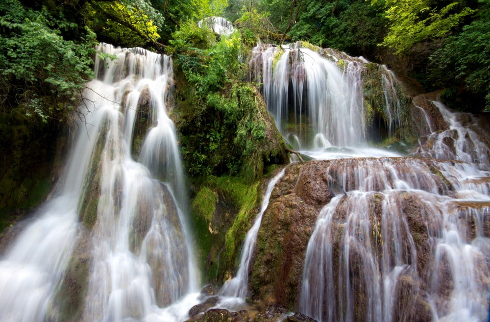
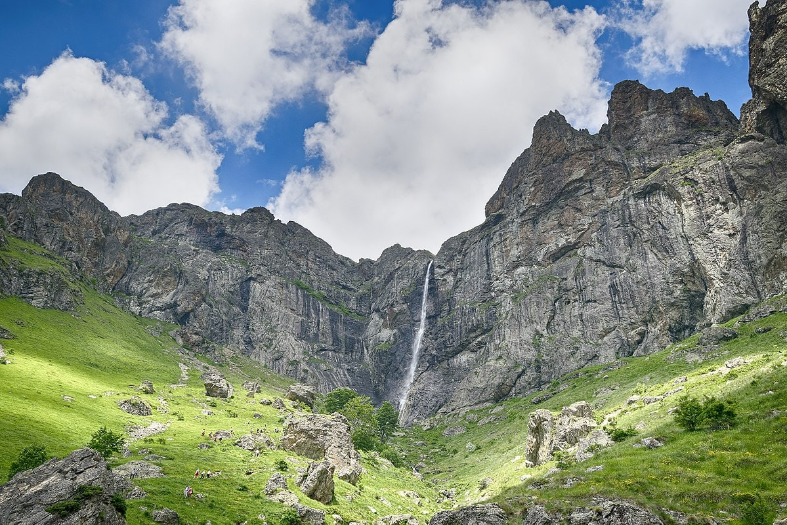
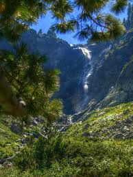

A country rich in water resources, Bulgaria has a large number of rivers that are divided into several regions based on their mouth's location. Most of the rivers that rise in southern Bulgaria have their mouths in the Aegean Sea outside Bulgarian territory. A notable exception is the Iskar that takes its source from Rila and runs through Stara Planina forming a gorge to reach the Danube. Depending on their location, they are divided into two regions, a Western Aegean and Eastern Aegean one. The former embraces the Struma and Mesta, while rivers in the latter include the Arda, Maritsa and Tundzha.
  As a mountainous country renowned for its water resources, you can bet Bulgaria has some amazing waterfalls! The majestic waterfalls of Bulgaria may not be as well-known as the Niagara Falls or Iguazu Falls, but they are still perfect places to visit as part of an adventurous hike or on a more relaxed picnic trip. From the highest in Southeastern Europe to some of the most picturesque, here come 7 waterfalls in Bulgaria that will take your breath away!
  